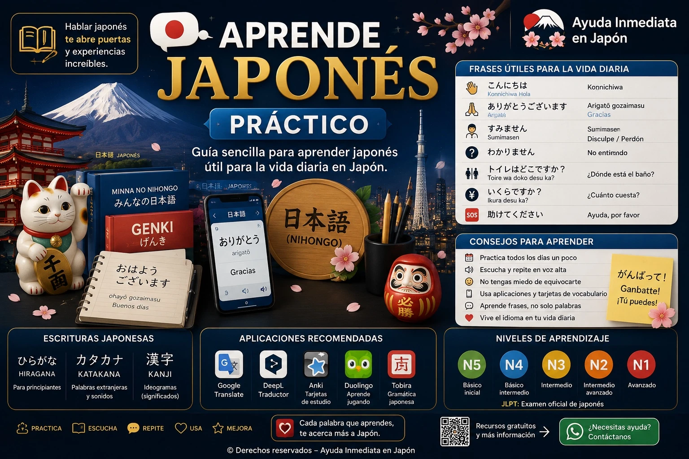
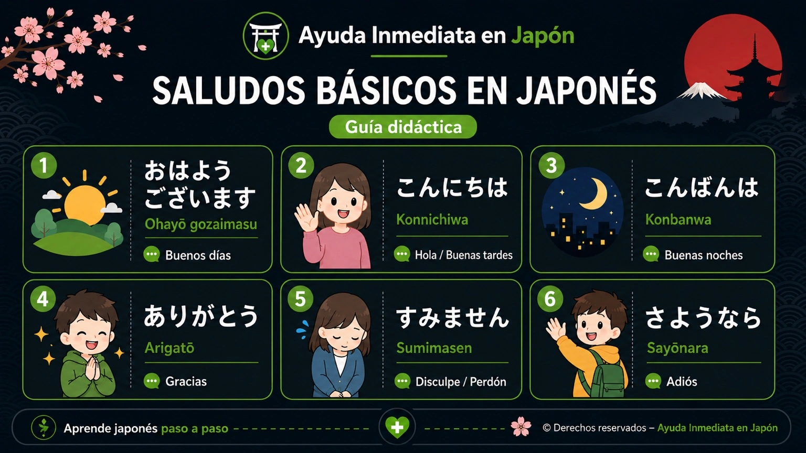
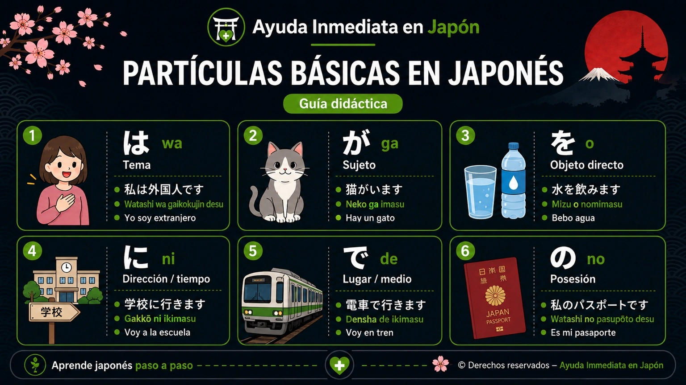
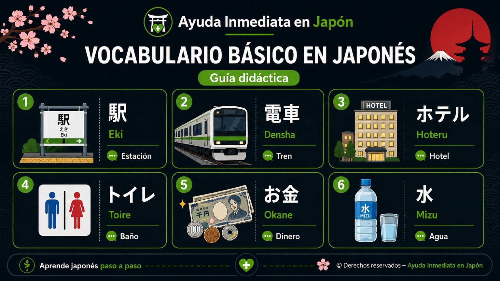

🗣️ Aprende japonés práctico
Guía sencilla y ampliable para aprender japonés útil para la vida diaria en Japón.

🇯🇵 ¿Qué es el japonés?
El japonés utiliza Hiragana, Katakana y Kanji.
Aprender poco a poco y usar frases prácticas ayuda mucho en trenes, hospitales, tiendas, restaurantes y trámites.
📘 Guía didáctica ilustrada
Lecciones visuales con japonés, pronunciación en rōmaji y significado en español.
Lección 1 · Saludos básicos


Toca la imagen para ampliarla. Si tu teléfono la abre en vez de descargarla, mantén presionada la imagen y elige «Guardar en Fotos» o «Guardar imagen», según tu navegador. Después usa «Volver a la guía».
Lección 2 · Partículas básicas


Toca la imagen para ampliarla. Si tu teléfono la abre en vez de descargarla, mantén presionada la imagen y elige «Guardar en Fotos» o «Guardar imagen», según tu navegador. Después usa «Volver a la guía».
Lección 3 · Vocabulario básico


Toca la imagen para ampliarla. Si tu teléfono la abre en vez de descargarla, mantén presionada la imagen y elige «Guardar en Fotos» o «Guardar imagen», según tu navegador. Después usa «Volver a la guía».
🎓 Curso gratuito de NHK
NHK World Japan ofrece lecciones, audios y explicaciones sencillas.
🎓 Ir al curso gratuito de NHK🗣️ Saludos y frases básicas
Español: Buenos días.
Rōmaji: Ohayō gozaimasu.
おはようございます。
Español: Hola / Buenas tardes.
Rōmaji: Konnichiwa.
こんにちは。
Español: Buenas noches.
Rōmaji: Konbanwa.
こんばんは。
Español: Gracias.
Rōmaji: Arigatō gozaimasu.
ありがとうございます。
Español: Disculpe / Perdón.
Rōmaji: Sumimasen.
すみません。
🔤 Partículas básicas
は (wa): marca el tema.
私は学生です。
Watashi wa gakusei desu. · Yo soy estudiante.
が (ga): marca el sujeto.
猫がいます。
Neko ga imasu. · Hay un gato.
を (o): marca el objeto directo.
りんごを食べます。
Ringo o tabemasu. · Como una manzana.
に (ni): destino o tiempo.
学校に行きます。
Gakkō ni ikimasu. · Voy a la escuela.
で (de): lugar o medio.
電車で行きます。
Densha de ikimasu. · Voy en tren.
🧠 Vocabulario útil
かわいい · Kawaii · Lindo / tierno
おいしい · Oishii · Delicioso
たのしい · Tanoshii · Divertido
おもしろい · Omoshiroi · Interesante / gracioso
おおきい · Ōkii · Grande
ちいさい · Chiisai · Pequeño
たかい · Takai · Alto / caro
やすい · Yasui · Barato
🧳 Frases útiles para turistas
Español: No hablo japonés.
Rōmaji: Nihongo ga hanasemasen.
日本語が話せません。
Español: ¿Dónde está la estación?
Rōmaji: Eki wa doko desu ka?
駅はどこですか？
Español: Ayúdeme, por favor.
Rōmaji: Tasukete kudasai.
助けてください。
🔢 Números, dinero y precios
Para comprar o pagar en Japón, primero aprende los números y la palabra 円 (en), que significa yen.
| Número | Japonés | Pronunciación |
|---|---|---|
| 1 / 2 / 3 | 一 / 二 / 三 | Ichi / ni / san |
| 4 / 5 / 6 | 四 / 五 / 六 | Yon / go / roku |
| 7 / 8 / 9 / 10 | 七 / 八 / 九 / 十 | Nana / hachi / kyū / jū |
| 100 / 1.000 / 10.000 | 百 / 千 / 一万 | Hyaku / sen / ichiman |
¿Cuánto cuesta?
Ikura desu ka?
いくらですか？
¿Puedo pagar con tarjeta?
Kādo de haraemasu ka?
カードで払えますか？
¿Aceptan efectivo?
Genkin wa tsukaemasu ka?
現金は使えますか？
No necesito bolsa.
Fukuro wa irimasen.
袋はいりません。
Consejo: en Japón los precios suelen mostrar «税込» (impuestos incluidos) o «税抜» (sin impuestos).
📅 Días, fechas y horas
Para citas médicas, trabajo y transporte conviene reconocer los días y preguntar por la hora.
| Español | Japonés | Rōmaji |
|---|---|---|
| Lunes / martes | 月曜日 / 火曜日 | Getsuyōbi / kayōbi |
| Miércoles / jueves | 水曜日 / 木曜日 | Suiyōbi / mokuyōbi |
| Viernes / sábado / domingo | 金曜日 / 土曜日 / 日曜日 | Kinyōbi / doyōbi / nichiyōbi |
| Hoy / mañana / ayer | 今日 / 明日 / 昨日 | Kyō / ashita / kinō |
¿Qué hora es?
Ima nanji desu ka?
今何時ですか？
¿A qué hora empieza?
Nanji kara desu ka?
何時からですか？
Tengo una cita mañana a las diez.
Ashita jūji ni yoyaku ga arimasu.
明日10時に予約があります。
Ejemplo: 15:30 se dice «gogo sanji han» (午後3時半). «Gozen» (午前) significa antes del mediodía y «gogo» (午後), después.
🚆 Transporte y estaciones
En estaciones busca las palabras 改札 (kaisatsu, torniquetes), 乗り場 (noriba, lugar de embarque) y 出口 (deguchi, salida).
¿Dónde está el andén número dos?
Ni-ban noriba wa doko desu ka?
2番乗り場はどこですか？
¿Este tren va a Kioto?
Kono densha wa Kyōto ni ikimasu ka?
この電車は京都に行きますか？
¿Dónde hago transbordo?
Doko de norikaemasu ka?
どこで乗り換えますか？
¿Dónde está la parada del autobús?
Basu-tei wa doko desu ka?
バス停はどこですか？
Comprueba el destino, la línea y si el tren es local (普通), rápido (快速) o expreso. No todos paran en las mismas estaciones.
🍱 Restaurantes, compras y tiendas
En muchos restaurantes puedes señalar una fotografía del menú. También es útil aprender a pedir sin picante o preguntar por ingredientes.
Esto, por favor.
Kore o onegaishimasu.
これをお願いします。
¿Tienen menú en inglés?
Eigo no menyū wa arimasu ka?
英語のメニューはありますか？
Sin picante, por favor.
Karaku shinaide kudasai.
辛くしないでください。
La cuenta, por favor.
Okaikei o onegaishimasu.
お会計をお願いします。
¿Puedo probarme esto?
Shichaku shite mo ii desu ka?
試着してもいいですか？
Si tienes alergias alimentarias, lleva una explicación escrita con los ingredientes exactos; una traducción automática puede ser insuficiente.
🏥 Hospital, farmacia y emergencias
Para recibir atención, describe el síntoma, desde cuándo empezó y si necesitas un intérprete. En una emergencia grave, llama al 119 para ambulancia o bomberos; para policía, al 110.
Me duele aquí.
Koko ga itai desu.
ここが痛いです。
Tengo fiebre.
Netsu ga arimasu.
熱があります。
Necesito una ambulancia.
Kyūkyūsha o onegaishimasu.
救急車をお願いします。
¿Hay alguien que hable español?
Supeingo o hanaseru hito wa imasu ka?
スペイン語を話せる人はいますか？
Soy alérgico/a a este medicamento.
Kono kusuri ni arerugī ga arimasu.
この薬にアレルギーがあります。
Si es una urgencia real, no esperes a poder pronunciar todo correctamente: muestra la frase escrita o pide ayuda a alguien cercano.
📍 Direcciones y ubicación
Reconoce las indicaciones que verás en estaciones, edificios y calles.
| Español | Japonés | Rōmaji |
|---|---|---|
| Derecha / izquierda | 右 / 左 | Migi / hidari |
| Recto | まっすぐ | Massugu |
| Entrada / salida | 入口 / 出口 | Iriguchi / deguchi |
| Cerca / lejos | 近い / 遠い | Chikai / tōi |
¿Dónde está el baño?
Toire wa doko desu ka?
トイレはどこですか？
¿Puede mostrarme en el mapa?
Chizu de oshiete moraemasu ka?
地図で教えてもらえますか？
¿Está lejos de aquí?
Koko kara tōi desu ka?
ここから遠いですか？
🈶 Kanji frecuentes
No necesitas memorizar todos los kanji para empezar. Estos aparecen con frecuencia en lugares públicos.
| Kanji | Significado | Lectura habitual |
|---|---|---|
| 駅 | Estación | Eki |
| 入口 / 出口 | Entrada / salida | Iriguchi / deguchi |
| 病院 | Hospital | Byōin |
| 薬局 | Farmacia | Yakkyoku |
| 禁止 | Prohibido | Kinshi |
| 注意 | Precaución | Chūi |
| 非常口 | Salida de emergencia | Hijōguchi |
| 営業中 / 準備中 | Abierto / preparando (no atendiendo) | Eigyōchū / junbichū |
La lectura puede cambiar según la palabra. Usa el significado y el contexto como primera ayuda.
📱 Frases para mostrar en pantalla
Si no puedes pronunciar la frase, pulsa «Mostrar en grande» y enseña la pantalla. Estas frases son de uso cotidiano.
Disculpe, no entiendo japonés.
Sumimasen, nihongo ga wakarimasen.
Por favor, hable más despacio.
Motto yukkuri hanashite kudasai.
¿Puede escribirlo?
Kaite moraemasu ka?
Necesito ayuda.
Tasukete kudasai.
Al pulsar una frase se abre en pantalla grande. Toca «Cerrar» para regresar a la lección.
📚 Libros y folletos recomendados
Material básico
Hiragana, katakana, vocabulario, partículas y frases de la vida diaria.
Material práctico para residentes
Trenes, hospitales, ayuntamiento, trabajo, compras y emergencias.
🌍 Traductores útiles
💡 Consejo importante
📅 Última actualización: 5 de noviembre de 2026
© 2026 Derechos reservados – Ayuda Inmediata en Japón